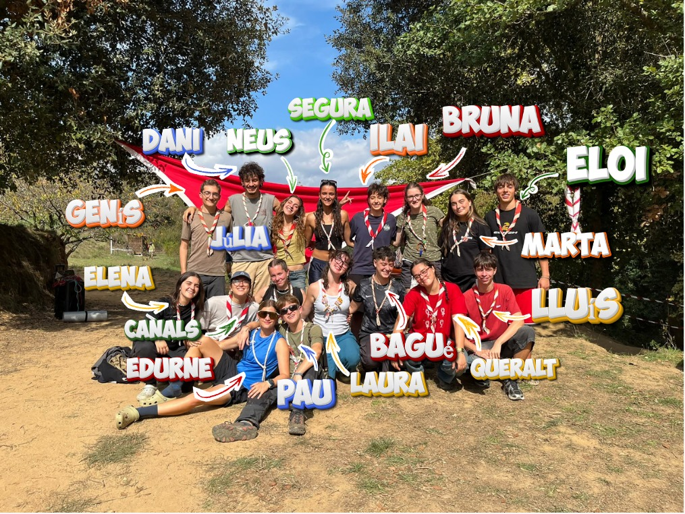

Créixer fent camí
Cinc etapes.
Una mateixa aventura.
Les branques d'un agrupament són les diferents etapes per les quals passen els infants i joves dins del moviment escolta. S'organitzen segons l'edat i el grau de desenvolupament personal, i cadascuna representa una fase de creixement i aprenentatge. Cada branca té el seu propi estil d'aprenentatge i uns objectius específics, adaptats a les necessitats i interessos de cada franja d'edat.
Riu amunt
Castors i Llúdrigues
Castors i Llúdrigues és la branca dels més petits de l'agrupament. És una etapa plena de descobertes, imaginació i noves amistats, en què els infants aprenen sobretot jugant i compartint petites aventures.
Durant el curs participen en jocs, tallers, excursions, sortides i activitats a la natura adaptades a la seva edat. A poc a poc, van guanyant confiança, aprenen a tenir cura de les seves coses i comencen a descobrir què significa formar part d'una unitat.
Els caps i quel·les creen un espai segur i acollidor on cada infant pot sentir-se escoltat i valorat. Per a molts, aquesta és la primera nit fora de casa, la primera excursió amb motxilla o el primer campament: petits grans passos que els ajuden a créixer amb alegria, curiositat i confiança.
Aquest any, la branca està formada per 11 llúdrigues i castors, guiats per 2 caps i 1 quel·la.
Tant com puc
Llops i Daines
A Llops i Daines, els infants viuen una etapa plena d'energia, curiositat i ganes de descobrir el món. El grup es converteix en un espai on poden ser ells mateixos, fer amistats, assumir petits reptes i aprendre que, quan col·laborem, podem arribar molt més lluny.
Les activitats combinen joc, natura, creativitat i reflexió. Al llarg del curs participen en gimcanes, tallers, excursions, campaments i petits projectes construïts entre tots. D'aquesta manera, van aprenent a expressar les seves idees, escoltar les dels altres i prendre decisions en grup.
També comencen a assumir responsabilitats senzilles: preparar el menú, tenir cura de la seva higiene, ajudar un company o col·laborar en les tasques quotidianes d'una sortida. Tot es treballa de manera progressiva, respectant el ritme de cada infant. És un lloc per riure, imaginar, embrutar-se, fer preguntes i tornar a casa amb moltes històries per explicar.
Aquest any, la branca està formada per 23 infants, 3 quel·les i 1 cap.
Sempre a punt
Ràngers i Noies Guia
Ràngers i Noies Guia és la branca on els nois i noies comencen una etapa de grans canvis, noves preguntes i una necessitat creixent de sentir-se escoltats i formar part del grup. Al cau troben un espai de confiança on compartir aquesta etapa i viure experiències que els ajuden a conèixer-se millor.
Les activitats tenen cada vegada més aventura i autonomia. Excursions, rutes, campaments, jocs, tallers i projectes de grup els conviden a organitzar-se, prendre decisions i afrontar reptes plegats. Aprenen que cadascú té alguna cosa valuosa per aportar i que el grup funciona millor quan hi ha respecte, compromís i cooperació.
Els caps i quel·les continuen sent-hi presents, acompanyant-los i oferint-los eines, però deixant progressivament més espai perquè provin, s'equivoquin i trobin les seves pròpies solucions. Aquesta branca és amistat, natura, rialles i superació: descobrir que una ruta sembla menys llarga quan es camina en bona companyia.
Aquest any, la branca està formada per 23 infants, 1 quel·la i 2 caps.
Fent camí
Pioners i Caravel·les
Pioners i Caravel·les és una etapa per descobrir què ens mou, quines persones volem ser i com podem deixar una petita empremta positiva al nostre entorn. Els joves tenen cada vegada més veu i participen activament en la preparació de les activitats, els projectes, les sortides i els campaments.
Durant el curs es proposen reptes més ambiciosos: poden preparar una ruta, impulsar una activitat de servei, col·laborar amb alguna entitat o desenvolupar un projecte nascut dels seus interessos. Aprenen a transformar una idea en realitat, organitzant-se, repartint responsabilitats i assumint les conseqüències de les seves decisions.
El grup és també un espai segur per parlar, compartir inquietuds i crear vincles profunds. Els caps i quel·les els acompanyen sense donar-los totes les respostes: els ajuden a fer-se bones preguntes, superar dificultats i trobar el seu propi camí. És una etapa intensa, plena d'amistats, aventures i moments que sovint es recorden durant molts anys.
Aquest any, la branca està formada per 23 infants, acompanyats per 3 quel·les.
Fem servei
Truc
Truc és l'última etapa del recorregut escolta dins les branques de l'agrupament. És un temps per mirar enrere, reconèixer tot el camí recorregut i començar a decidir com es vol portar l'esperit escolta més enllà del cau.
Els joves prenen les regnes del seu propi projecte. Amb l'acompanyament dels seus animadors, decideixen què volen descobrir, quin servei poden oferir i quina experiència volen construir com a grup. Poden col·laborar amb entitats socials, participar en iniciatives del poble, preparar una ruta o impulsar un projecte relacionat amb alguna realitat que els preocupi.
El servei hi té un paper especialment important: observar l'entorn, entendre'n les necessitats i comprometre-s'hi de manera responsable. Truc és autonomia, compromís i comunitat. És descobrir que tot allò après al cau pot transformar-se en una manera de viure, atenta als altres, respectuosa amb la natura i disposada a construir un món una mica millor.
Aquesta branca es divideix en dues: Truc 1 i Truc 2, ja que en cadascuna es desenvolupen parts diferents del projecte.
Truc 1 està format per 7 joves guiats per 2 animadores, i Truc 2 per 7 joves acompanyats per 2 animadors.
La comunitat que acompanya
Equip de caps i quel·les actual
Un equip de 17 caps, quel·les i animadors acompanya els infants i joves de l'Agrupament durant tot el curs.

Sempre a punt